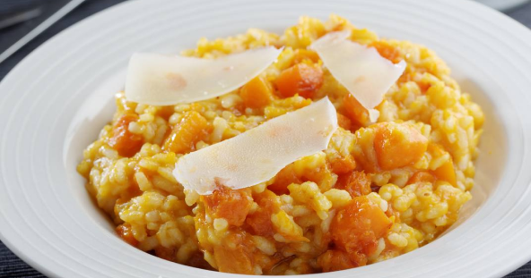

risoto de abobora
ingredientes
- 1/2 kg de abóbora tipo kabotchá
- 2 colheres (sopa) de azeite
- 1 cebola média bem picada
- 1 dente de alho picado
- 3 colheres (sopa) de cebolinha verde picada
- 1/2 xícara (chá) de vinho banco seco
- 2 xícaras (chá) de arroz arbóreo
- 2 tabletes de caldo de galinha
- 1 colher (chá) de ervas finas
- 1 colher (café) de gengibre
- 1 folha de louro
- 2 colheres (sopa) de manteiga sem sal
- 50 g de queijo parmesão ralado
- Salsinha picada a gosto
- Pimenta a gosto
video
modo de preparo
descasque a abóbora e corte-a em cubinhos pequenos.
Reserve. Coloque o azeite em uma panela funda e
acrescente a cebola e o alho picados e leve ao fogo baixo até
que a cebola e o alho murchem, mexendo sem parar.
Adicione a cebolinha verde e a abóbora picada e deixe
refogar por uns 3 minutos, mexendo sempre. Adicione o
vinho branco e deixe cozinhar por uns 2 minutos. Adicione 2
xícaras de chá de água fervente e os tabletes de caldo de
galinha e deixe cozinhar para que a abóbora fique
ligeiramente macia, por uns 10 minutos em fogo baixo.
Aumente o fogo e acrescente o arroz arbóreo. Mexa bem e
deixe levantar fervura. Acrescente as ervas finas, o gengibre
e a folha de louro. Diminua a chama do fogão e sempre
mexendo vá acrescentando água fervente quanto
necessário. Leva em média de 15 a 20 minutos para adquirir
o ponto cremoso. Quanto estive al dente acrescente a
manteiga e o queijo parmesão ralado. Experimente o sal e
acrescente pimenta a gosto. Desligue o fogo e tampe a
panela. Deixe descansar por uns 5 minutos. Sirva regado
com queijo parmesão ralado e salsinha picada.